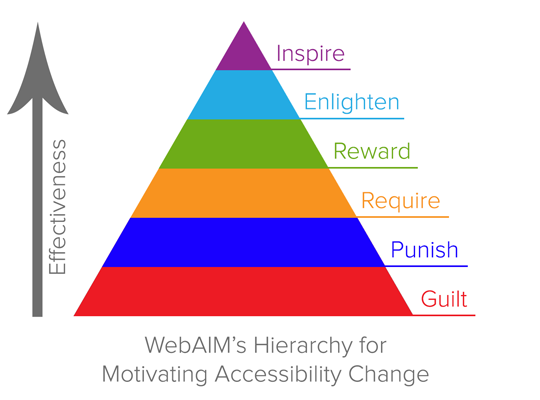
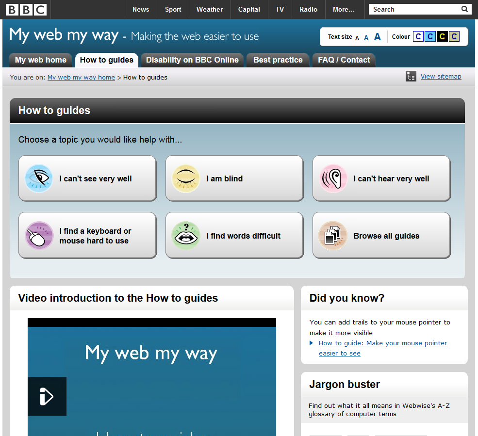

Quality Training - SRE Team
Nawaz, PayPal / @mpnkhan
What is Accessibility
Making your product available for Everyone
Do you know?
- Around 650 million people with disabilities across the world.
- Around 70 million people with disabilities in India alone.
- Increased number of elderly people who also rely on technology.
- Large number of users rely on mobile devices
WebAIM’s Hierarchy for Motivating Accessibility Change
Objective of Accessibility Testing
- Empower people with disabilities
- Creating an inclusive society and NOT discriminate against people with disabilities.
Main types of Disability
- Visual
- Hearing
- Mobility
- Cognitive
Affects everyone
- Content in Bright Sunlight
- Mouse or Trackpad doesn't work
- No headphones handy
- Content is not in your native language.
Affects everyone
- Getting older
- Seeing, Hearing, Holding mouse, keying-in all will not be same
- Supporting accessibility now helps to serve us
May affect as well
- Accidents
- Broken limbs
- Eye injuries
- Hearing injuries
How People with Disabilities Use the Web
Need to understand and put into their shoes 
Testing
Manual, Automated and User testing
“ For testing with assistive technologies by people with disabilities, please contact Accessibility Team ”
Tools for testing:
PAET:

Frequently Occuring Problems
- Missing alt text for images
- Inappropriate / no Heading structure
- Missing labels for form fields
- Missing focus indication
- Lack of keyboard operability
- Confusing links (i.e Click here)
- Poor color contrast
- Inaccessible widgets
- Focus does not move to modal dialogs
- Inaccessible CAPTCHA
- Inaccessible media player
Keyboard testing
- Can you tell which item has focus?
- Can you interact with all controls (links, menus, forms) with only the keyboard?
- Can tab to each element of the page and cycle from the bottom of the page to the top without getting stuck anywhere.
- Also can do the same test using shift-tab through the whole page.
- Am I able to complete the flow with just keyboard
- Does the tab order match your expectation?
Image Alt text
- Click Text-only on Wave toolbar
- Alternative text?
- Is the alternative text appropriate?
- Is the color contrast okay?
Heading Order
Click Structure/Order on Wave toolbar
Labels
- Is the label visible always?
- click label text next to a text box, does the cursor appear in the field?
- click label text next to a radio / checkbox, does it get toggled?
- click label text next to a select menu, does it get focus?
Label, Hint text, Error Message
Guess a number between 1 and 10?
Enter Answer
Hyperlinks
- Is there any “click here,” “more,” “link to…”?
- Same text but different links, like edit, change (no context)
- Do links to downloads provide helpful info?
- Are your links underlined (or otherwise obvious)?
- Is there alt text for image links?
- Are there any reduntant title or tooltip text?
Automated Testing : Accessibility report Plugin for Bluefin
- Accessibility Report Maven Plugin is used to generate accessibility error reports for all the PayPal pages and is available as a consolidated error report at /target/surefire-reports/RuntimeReporter/AccessibilityErrorReport.html.
- This plugin leverages the PAET server for doing the evaluation.
MAVEN Configurations
- enablePlugin - true or false - To enable or disable the plugin. Default is true.
- priority P1,P2,P3,P4 - To generate report with errors with the specified priority. Multiple priorities can be specified as comma (,) separated values. Example: P1,P2 By default all the errors will be displayed
- accessibilityServer - The accessibility server which should be used to evaluate the pages for error.
- testOutputFolder - The full path of the test output folder which holds the test
- execution report (Runtime Reporter data). This can be used if you want to override the default location of test output folder, which is target/surefire-reports.
Conclusion
- With too many things in focus like speed, adaptive and responsive, Accessibility takes a backseat before it is released to the public.
- Inaccessible components are repeatedly incorporated into every new project which leaves behind many inaccessible websites.
- It becomes every individual’s responsibility to contribute their efforts in empowering the people with disabilities and creating an inclusive society that does not discriminate against people with disabilities.